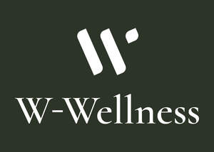
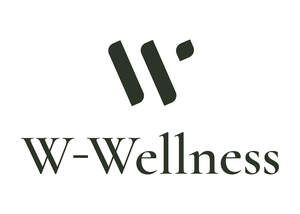
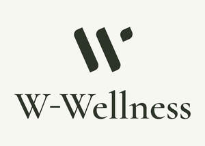

Trade Mark Journal No.2025/025 20 June 2025
UK00004215276 6 June 2025 (3,5,9,35,44)
Mark 1

Mark 2

Mark 3

Mark 4
- Class 3
- Cosmetics; skincare cosmetics; toiletries; moisturisers; cosmetic preparations; hair cosmetics; hair care preparations; nail cosmetics; lip cosmetics; tanning oils and gels; non-medicated skincare preparations; non-medicated serums, creams, and lotions for cosmetic use; cleansing and exfoliating preparations for the skin; facial masks and peels; non-medicated bath and body products; essential oils for cosmetic purposes; facial creams; beauty care cosmetics; cosmetics in the form of lotions; suncare lotions; body creams [cosmetics]; skin masks [cosmetics]; after-sun creams; cosmetics in the form of powders; cosmetics containing keratin; nail paint [cosmetics]; anti-aging creams [for cosmetic use]; skin cleansers [cosmetics]; body and facial gels; makeup; hair masks; non-medicated toiletry preparations.
- Class 5
- Dietary and nutritional supplements; dietary and nutritional supplements for general health and wellbeing; vitamin and mineral supplements; herbal supplements for medicinal purposes; probiotic and prebiotic supplements; supplements for skin, hair, and nail health; medicinal preparations for homeopathic use.
- Class 9
- Computer software; application software; software applications; downloadable electronic publications; downloadable electronic publications in the field of health, wellness, and nutrition; downloadable mobile applications; downloadable mobile applications for wellness tracking and supplement management; downloadable audio and video content; downloadable audio and video content featuring wellness advice and routines; pre-recorded videos; pre-recorded media; podcasts; web application software and mobile application software in relation to shopping, beauty and skincare, fitness, self-discovery, healthy living, nutrition, food, wellness.
- Class 35
- Retail and online retail services connected with the sale of cosmetics, skincare cosmetics, toiletries, moisturisers, cosmetic preparations, hair cosmetics, hair care preparations, nail cosmetics, lip cosmetics, tanning oils and gels, non-medicated skincare preparations, non-medicated serums, creams, and lotions for cosmetic use, cleansing and exfoliating preparations for the skin, facial masks and peels, non-medicated bath and body products, essential oils for cosmetic purposes, facial creams, beauty care cosmetics, cosmetics in the form of lotions, suncare lotions, body creams [cosmetics], skin masks [cosmetics], after-sun creams, cosmetics in the form of powders, cosmetics containing keratin, nail paint [cosmetics], anti-aging creams [for cosmetic use], skin cleansers [cosmetics], body and facial gels, makeup, hair masks, non-medicated toiletry preparations, medicinal preparations for homeopathic use, dietary and nutritional supplements, dietary and nutritional supplements for general health and wellbeing, vitamin and mineral supplements, herbal supplements for medicinal purposes, probiotic and prebiotic supplements, supplements for skin, hair, and nail health; business information; provision of business information relating to the sale of wellness products; advertising and promotional services; advertising and promotional services for wellness brands; collection of information relating to market research; dissemination of data relating to business; collection of market research information; demonstration services for goods and services; distribution of samples services; sales promotion services; information, consultancy and advisory services for all of the aforesaid.
- Class 44
- Nutritional and diet advice, information and consultancy; providing information in the field of health and wellness via a website; provision of health and wellness information and advice; beauty care services; beauty care services, including skincare consultations; providing information in the field of wellness programs and personalised health plans; online consultations in the field of health and wellness; medical treatment services provided by a health spa; beauty care services provided by a health spa; health optimisation services; personalised wellness programmes and health coaching; mental health and stress management services, including mindfulness and relaxation guidance; wellness and holistic lifestyle counselling; wellness retreats and spa services (excluding hotel services); information and advice relating to herbal and natural health remedies; information, consultancy and advisory services for all of the aforesaid.
The W Medispa Group Ltd
Representative: Fox Williams LLP